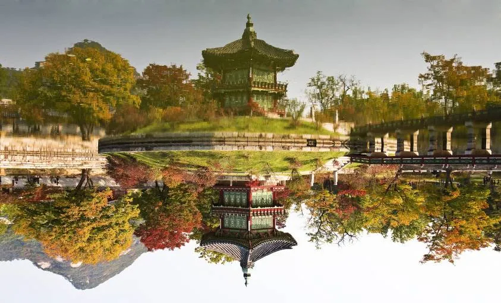

A treasure through time
From ancient China …
The Beijing Imperial Palace was the residence of the Emperor of China between 1420 and 1912. From 1420 to 1644, it was the home of the Ming dynasty, when it was invaded by the peasant revolution led by Li Zicheng, the emperor of the time Chongzhen hung himself on the hill Jingshan, thus ending the Ming dynasty. The next dynasty, the Qing broke the tradition that each emperor dynasty had its own palace by settling in the Forbidden City. The city covers an area of 13 hectares but has a buffer zone of 153 hectares.
Pekin's imperial palace
…to the present day
Today, this city has several names, first its full name is the Forbidden Purple City, but it is only named Forbidden City in the West. Contemporary Chinese call it Gùgōng (故 宫) which means «the old palace» or the Imperial Palace of Beijing. A museum is located inside the palace, accompanied by some souvenir shops and light restaurants. Only the Starbucks coffee chain was able to settle there in 2000, causing a huge controversy later that forced the chain to close its coffee palace. The Imperial Palace Museum houses several museums including a ceramic museum and a picture gallery (museum composed of paintings). You can visit the city all year round but with different schedules between the period April-October (8:30am/ 5pm) and the period November-March (8:30am/ 4:30pm). However, it is impossible to enter on Mondays. The cost of entry also changes depending on the period, between April and October it will be necessary to pay 60 yuan or about 8 euros, while from November to March, the price is 40 yuan or 5.30 euros.

The reflection of a building in the lake of the palace garden
You can visit the city all year round but with different schedules between the period April-October (8:30am/ 5pm) and the period November-March (8:30am/ 4:30pm). However, it is impossible to enter on Mondays. The cost of entry also changes depending on the period, between April and October it will be necessary to pay 60 yuan or about 8 euros, while from November to March, the price is 40 yuan or 5.30 euros.